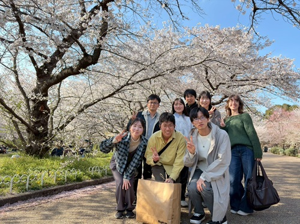

京都工芸繊維大学 応用化学課程 高分子材料デザインコース
高分子合成化学研究室 KAMBAYASHI LAB.
[English]
京都工芸繊維大学 応用化学課程（高分子材料デザインコース）
高分子合成化学・高分子化学・有機(金属)化学を基盤に、高分子機能性材料の創成を目指した研究を進めています。
ようこそ 神林グループのホームページへ

News
- JST創発的研究支援事業に2026年度新規課題に採択されました！(2026.10.27)
- 住友財団 ２０２６年度基礎科学研究助成に採択されました(2026.10.6)
- 高﨑さんが中心となって進めた、らせん高分子の形状制御に関する論文がPolym. Chem.に受理されました(DOI: 10.1039/D6PY00733C)。 (2026.10.5)
- 第75回高分子討論会＠東京理科大で発表しました(内田・久保・高﨑)(2026.9.2-4)
- 第6回高分子合成若手研究会に参加しました＠東京科学大(2026.9.1)
- 第106回高分子若手研究会（関西）に参加しました(内田・浦田・高林・別所)(2026.7.25-26) 高林宙輝さんがベストディスカッション賞を受賞しました！(写真)
- 第72回高分子研究発表会（関西）で発表しました(内田・久保・高﨑)(2026.7.14)
- 第75回高分子学会年次大会で高﨑早瑠さんが優秀オンデマンド発表賞を受賞しました！(写真)(2026.6.16)
- International Symposium on Chemical Structure Reprogramming (ISReP in Kyoto)で発表(SRePL：神林、Poster：久保・高﨑)しました。 (2026.6.4-6)
- 第75回高分子年次大会に参加＋発表(オンデマンド：内田・久保・高﨑)しました。 (2026.5.11-15)
- 不斉重合に基づく光学活性高分子に関する論文がPolym. Chem.に受理されました (2026.4.3)
- 新歓を兼ねたお花見をしました (2026.4.2)
- B4の３名(浦田さん、高林さん、別所さん)と M1の１名（Chloé Huartさん）が加入し新年度スタート(2026.4.1)
- 大阪大学の星本先生が代表の環境問題対応型研究＠ERCAに分担者として参加することになりました(2026.4.1)。
- 加藤研(超分子材料学分野)と合同で4年生の研究発表をしました (2026.3.24)
- ポリチオフェンの末端官能基化に関する論文がMacromolecules に受理されました(DOI: 10.1021/acs.macromol.6c00042)(2025.3.18)
- 日本化学年会 第106回春季年会で発表しました[口頭発表(内田)・ポスター(久保・高﨑)] (2026.3.17-20)
- 令和7年度卒業研究発表会で発表しました(久保・高﨑・堀田) (2026.2.16)
- SReP領域 第３回公開シンポジウム＠名古屋大学に参加＋ポスター発表をしました (2026.1.23-24)
- 加藤研(超分子材料学分野)と合同で新年会を行いました (2026.1.9)
- 京都工芸繊維大学・材料化学系主催の研究講演会で発表を行いました(2025.12.17)
- ENEOS東燃ゼネラル研究奨励・奨学会の助成に採択されました(2025.12.15)。
- 松籟科学技術振興財団 ２０２５年度助成金交付研究に採択されました(2025.12.12)
- 小笠原敏晶記念財団 科学技術助成に採択されました(2025.11.26)
- 第三回高分子結合制御研究会@名古屋工業大学で講演(神林)＋ポスター発表3件[内田(鬼塚研所属)・久保・高﨑]を行いました(2025.11.17-18)。
- πスタック型らせん高分子に関する研究が高分子学会会誌「高分子」の"トピックス"に掲載されました(DOI: 10.1295/kobunshi.74.11_6153)(2025.11.1)
- 中西研・加藤研と研究交流会を行いました(2025.10.21)
- 高分子骨格変換に関する論文がChem. Lett. に受理されました(DOI: 10.1093/chemle/upaf193)(2025.10.16)
- 東京都立大学の山添先生が代表の「パッシブDAC技術の研究開発」NEDOムーンショットに委託研究として参加することになりました。(2025.10.1)
- 第１３回山田研究会（若手リトリート）@門司港に参加＋話題提供をしました(2025.9.23-24)。
- 第74回高分子討論会@関西大学でポスター発表1件[内田(鬼塚研所属)]を行いました(2025.9.16-18)。
- C's Meeting 2025 @信州大学工学部に参加しました。(2025.8.26-27)。
- πスタック型らせん高分子に関する研究がMacromolecules に受理されました(DOI: 10.1021/acs.macromol.5c01234)(2025.7.25)
- 第71回高分子研究発表会[神戸]でポスター発表1件[内田(鬼塚研所属)]を行いました(2025.7.17)。
- SReP領域 第２回公開シンポジウム・ブレスト会議＠北海道大学に参加しました (2025.5.30-31)
- 加藤研(超分子材料学分野)と合同で新歓を兼ねたお花見をしました (2025.4.9)
- B4の3人が加わり研究室スタート (2025.4.8)
- 研究室が開始しました (2025.4.1)
- 学生募集中 -
- 一緒に研究を楽しんでくれる意欲的な学生を歓迎します。
- 研究室の見学は随時受け付けます。下のフォームからお申し込みください（ご質問は神林(メール)まで）。
- 研究室訪問を申し込む
- 入学試験の日程や試験科目については、京都工芸繊維大学の入試情報をご覧ください。
Last Update: 2026/10/27
Copyright © 2025
Kanbayashi Lab, Kyoto Institute of Technology.